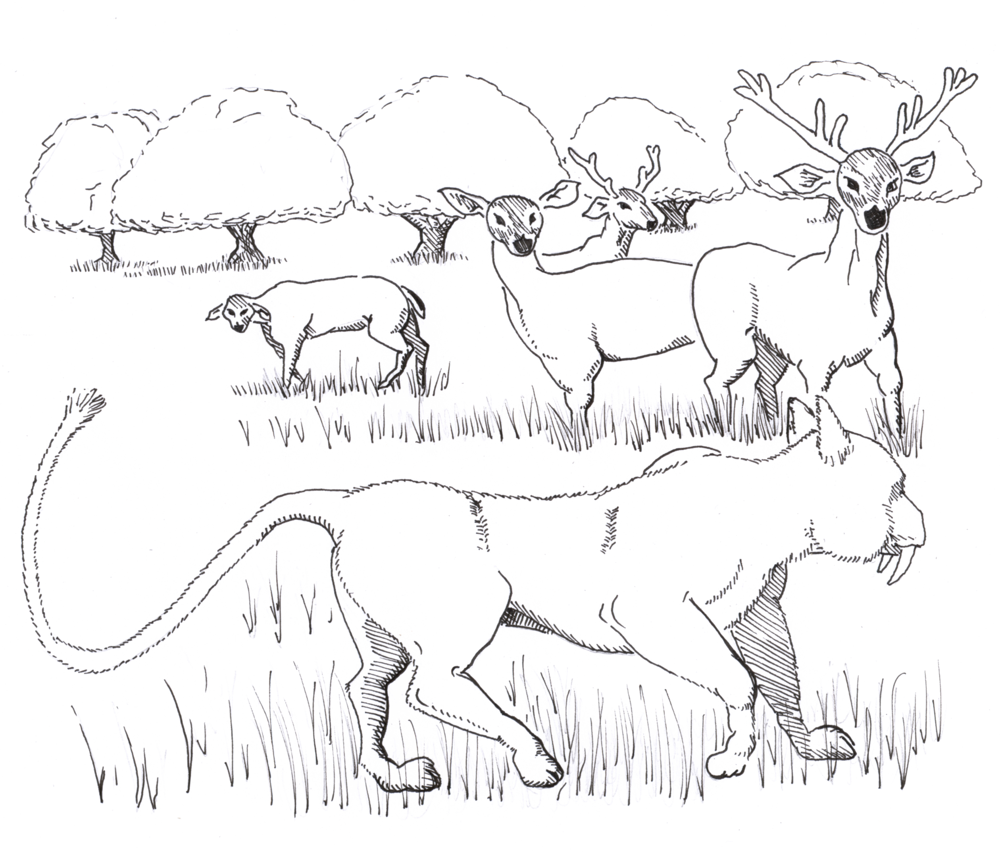

The Kuh'Undar kept huge flocks of semi-wild Jay'Vehm deer, which grazed on the Savannah.
Although they were herbivorous, the males could be violent and aggressive, especially in mating season
The vicious Tohm Cats were used to herd the Kuh'Undars' flocks
Tohm Cats were used by Kuh'Undar herders to control and manage the flocks. When fully domesticated they were capable of managing large herds of different beasts, their saber-teeth and sharp claws sufficient to enforce order and control upon the most obstinate herd. They were especially suited to helping the Kuh'Undar manage Jay'vehms, a breed of long-horned cattle favored for their milk and flesh. Tohm Cats preferred to eat sheep, but if fed too much Ram, they could easily become unruly and uncontrollable.
A breed of giant Bees, which could gather honey from many different sources. The Dii Bee hives were enormous structures, usually perfectly symmetrical and filled with a highly ordered society of mindless drones performing the work of the Hive; continuously gathering, building, structuring and refining the collected pollen. Occasionally a Dii beehive would go amok, usually due to lack of living space in the Hive or if groups of worker drones suddenly became obsessed with a particular task, blocking entry and disturbing the harmony of the entire Hive. Beehives were highly prized, and very susceptible to lice and infection, so they were often hidden behind multiple layers of defense including Walls of Fire, Tohm Cats and Ho'ttep Dragons.